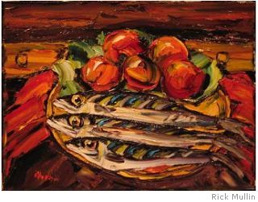

Rick Mullin
Still Life with Mackerel
Three mackerel look back at me
Forlorn, neglected, oh-so-slightly crazed,
And petrified against all atrophy
In knifed-in oils. If those eyes could see,
They’d see their nemesis. Amazed,
Three mackerel look back at me
The way they always do. “Philosophy
Be damned,” the fishes say, forever glazed
And petrified. “Against all atrophy
You thought to catch us back to life and free
Us to an endless stream of Saturdays.”
Three mackerel look back at me
Like albatrosses. “How’s the family?”
Neglected, I admit. The bastards phrased
That perfectly. Against all atrophy
I’ve scumbled at some artist’s legacy
Of living things, and look at what I’ve raised —
Three mackerel looking back at me,
A palimpsest in crusts, a fucking trophy.

Rick Mullin is a business journalist and painter whose poetry has appeared in several print and online journals including Relief, The New Formalist, and Umbrella. He lives in northern New Jersey.
|